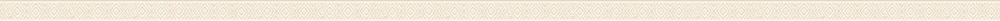

Culture
Ethiopia has so much culture, and this page will summarize a few parts of it. Click below if you want to learn a little bit about Ethiopia’s amazing culture!
Go to Culture →
Start Speaking. Start Belonging.
Ethiopia is an amazing country with different cultures, traditions, and languages. ሀበሻ is a site that will help you start to understand a little bit about these things. It is a very basic and small beginning to help you start your path to understanding all things Ethiopia.
Whether you’re here to learn a few Amharic words or to learn a little bit about a new culture, you’re in the right place!


Ethiopia has so much culture, and this page will summarize a few parts of it. Click below if you want to learn a little bit about Ethiopia’s amazing culture!
Go to Culture →Ethiopia has over 200 spoken dialects, but the national language is Amharic. Click below if you want to learn some basic phrases to use with Ethiopians!
Go to Language →This site is focused on bringing to light a little bit of Ethiopia’s culture and language. Ethiopia is a beautiful country that many people know very little about. Ethiopia has more than just poverty to offer. It has several beautiful languages, places, and cultures. Our goal is to show off the basic parts of all this, for anyone who is curious about Ethiopia.